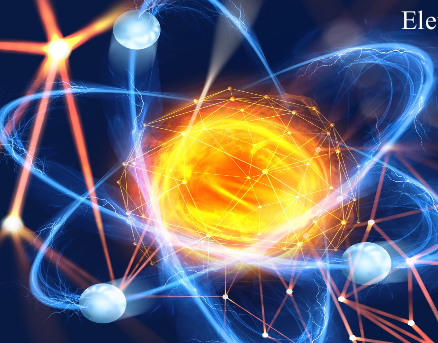

1º Trimestre

Meme sobre Evolucionismo
Descrição: Produção de um meme com temática evolucionista, relacionando o conceito de evolução com o avanço da tecnologia ao longo do tempo.
Habilidades desenvolvidas:
C3: Analisar os impactos das ações humanas no ambiente, identificando causas e propondo soluções.
H15: Comparar propostas de intervenção ambiental considerando riscos e benefícios.
H18: Identificar situações de risco ambiental no contexto local.

Guerras e conflitos relacionados ao petróleo
Descrição: Produção de um material no Canva abordando conflitos geopolíticos relacionados à exploração e ao uso do petróleo.
Habilidades desenvolvidas:
C1: Compreender as Ciências da Natureza como construções humanas ligadas à cultura.
H1: Interpretar informações em diferentes formatos (textos, gráficos, tabelas, etc.).
C2: Aplicar conceitos científicos para explicar fenômenos e resolver problemas.
H9: Explicar conceitos de energia, matéria e transformação.
H11: Utilizar práticas de investigação científica, como observação e análise de dados.

Relatório – Eletricidade por atrito
Descrição: Elaboração de um relatório sobre experimentos realizados em aula envolvendo eletricidade estática por atrito.
Habilidades desenvolvidas:
C1: Compreender ciência e tecnologia como construções humanas.
H1: Interpretar diferentes formas de informação científica.
C2: Aplicar conceitos científicos na análise de fenômenos.
H7: Compreender conceitos fundamentais da Química.
H9: Explicar energia, matéria e suas transformações.
H11: Utilizar o método científico (observação, experimentação e conclusão).
H12: Relacionar informações para construção de modelos científicos.